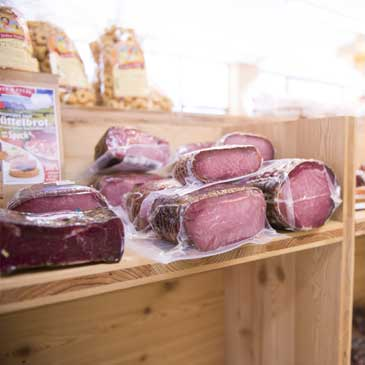
Salumi e formaggi
Speck e formaggi
Speck in vari tagli e stagionature e i formaggi dei nostri alpeggi, come il Casolet della Val di Sole presidio Slow Food.
Vedi prodottiOffriamo al pubblico una selezione dei migliori speck del Trentino in vari tagli e stagionature.
Scopri di piùDa Toffenetti i principali ingredienti della cucina trentina: polenta gialla, risi aromatizzati con funghi, mele o frutti di bosco, paste e aceti balsamici aromatizzati.
Vai allo shop onlineTutti gli aromi dei vini trentini, rossi, bianchi o aromatici, e i sapori delle birre artigianali ispirate a ricette locali.
Vai allo shop onlinePer i tuoi acquisti online superiori a € 95 con pagamento tramite bonifico bancario le spese di spedizione sono GRATIS.*
* Il peso del materiale ordinato non deve superare i 75 kg e l'indirizzo di consegna deve essere in Italia. Oltre i 75 kg le spese sono calcolate in base al peso e comunicate via email.Ci trovate nella deliziosa località di Presson, una frazione del comune di Dimaro Folgarida in Val di Sole, con comodo accesso dalla SS42, grande parcheggio e ampi spazi dedicati ai pullman.
La tradizione familiare iniziata negli anni '80 dal padre Livio e dalla madre Dima è portata avanti dalla famiglia Toffenetti con lo stesso spirito. Troverete un ambiente familiare e una vasta offerta di prodotti di qualità, che nel tempo si è evoluta con la fornita cantina dei migliori vini e grappe come la Zucal.
All'interno troverete anche una zona dedicata all'oggettistica, una vasta scelta di artigianato locale e idee regalo. Per i gruppi si organizzano merende gustose legate ai sapori della migliore tradizione trentina locale.
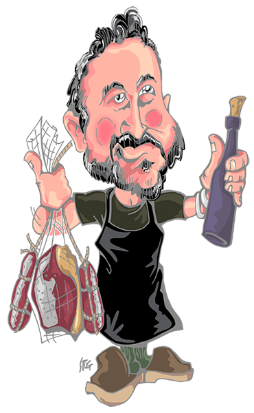
Il meglio della gastronomia trentina sugli scaffali del nostro negozio e nello shop online.

Speck in vari tagli e stagionature e i formaggi dei nostri alpeggi, come il Casolet della Val di Sole presidio Slow Food.
Vedi prodotti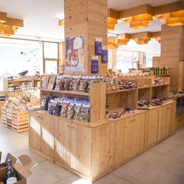
Farine di polenta macinata a pietra, funghi secchi o sott'olio, sughi di cervo, lepre e cinghiale.
Vedi prodotti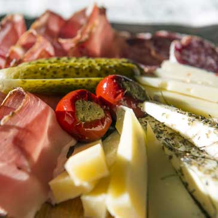
Una selezione di canederli e i taglieri di speck e formaggio, perfetti anche per una merenda in compagnia.
Scopri di più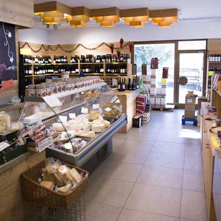
Formaggio stagionato nel fieno, formaggio al Teroldego e spezie e i sapori delle valli trentine.
Vedi prodottiMiele, confetture, cioccolato, caramelle e succhi di mela per una dolce pausa trentina.
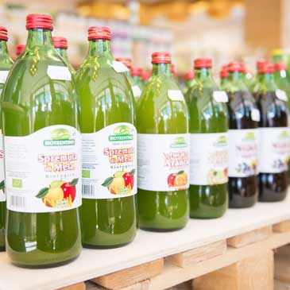
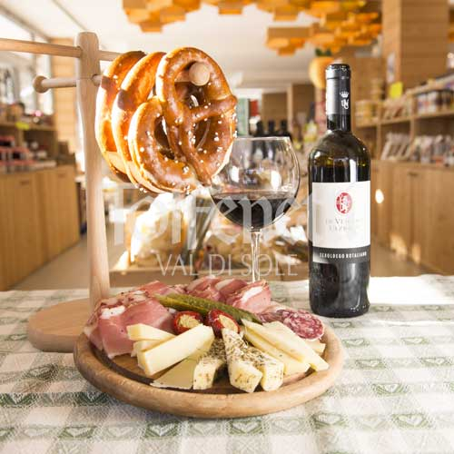
Miele della Val di Sole e confetture di frutti di bosco.
Vedi prodotti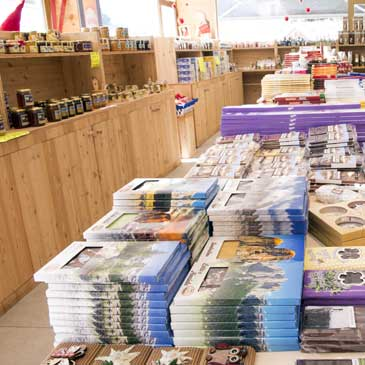
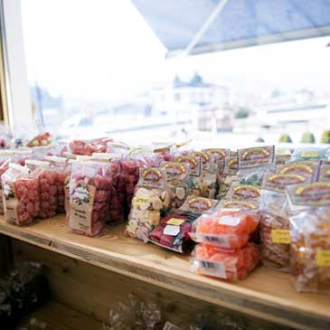
Il Trentino, terra di elezione di vitigni prestigiosi quali Groppello, Müller-Thurgau, Gewürztraminer, Teroldego e Lagrein, ci regala una vasta gamma di vini, grappe e distillati.
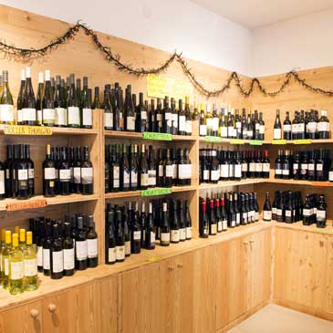
Rossi, bianchi o aromatici: tutti gli aromi dei vini del Trentino.
Esplora i prodotti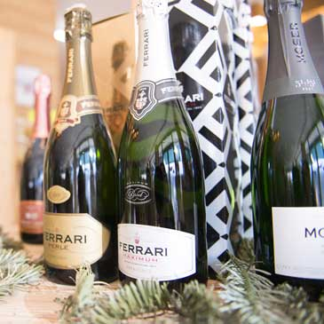
Le bollicine di montagna per brindare alle occasioni speciali.
Esplora i prodotti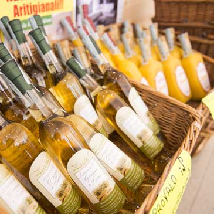
Grappe dall'intenso sapore naturale o arricchite da frutta ed erbe di montagna.
Esplora i prodotti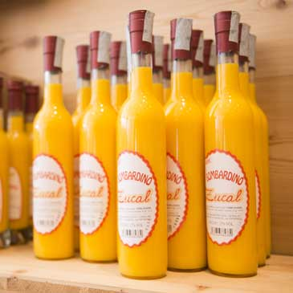
Il liquore della tradizione alpina, da gustare caldo dopo una giornata sulla neve.
Esplora i prodottiPer i tuoi acquisti online superiori a € 95 le spese di spedizione sono gratis (pagamento con bonifico, consegna in Italia).
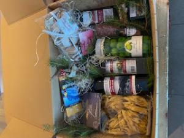

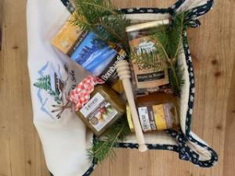
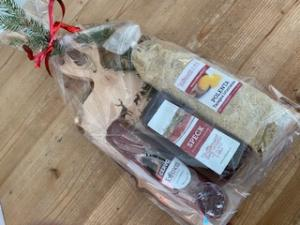
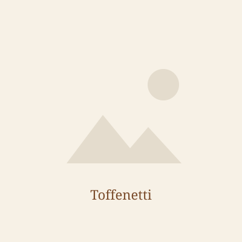
Portate con voi un pezzo di tradizione del Trentino Alto Adige scegliendo dal nostro ampio catalogo di prodotti di artigianato e manufatti in legno.
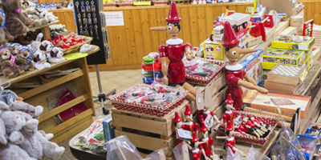
Manufatti in legno, orologi a cucù e una ricca selezione di giocattoli in legno.
Scopri di più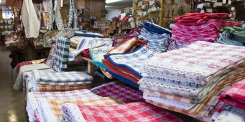
Ispirate al tempo trascorso nella Stube, le nostre stoffe tirolesi dai tipici ricami porteranno a casa vostra il calore e l'allegria della Val di Sole.
Scopri di più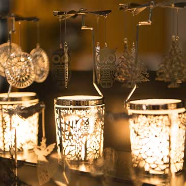
Lanterne, addobbi e decorazioni nel nostro reparto dedicato ai Mercatini di Natale.
Scopri di piùLa Val di Sole occupa la parte nord occidentale della provincia di Trento, circondata dai gruppi montuosi dell'Ortles Cevedale, dell'Adamello Presanella e delle Dolomiti di Brenta, patrimonio dell'UNESCO. Capoluogo storico della valle è Malè, sede dei principali servizi pubblici.
Tra le attività economiche più sviluppate il primo posto spetta al turismo, affiancato dall'agricoltura, l'allevamento, l'artigianato e il commercio. Il turismo della Val di Sole è particolarmente votato agli sport della montagna (MTB, canoa-kayak, rafting ed escursioni) e naturalmente allo sci, con oltre 300 km di piste dei caroselli Folgarida-Marilleva-Madonna di Campiglio, Tonale e Pejo.
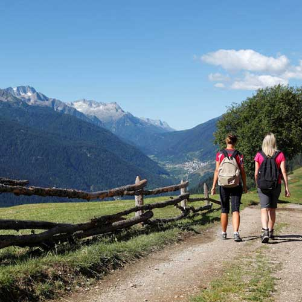
Hai domande su un prodotto, vuoi una confezione regalo personalizzata o prenotare una merenda per il tuo gruppo? Scrivici su WhatsApp o chiamaci: ti rispondiamo volentieri.